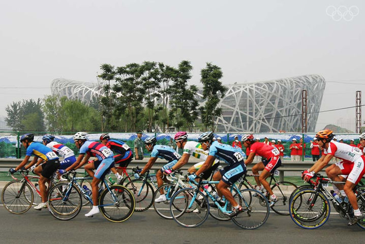

Cycling AT OLYMPICS
|  |
CYCLING HAS BEEN CONTESTED AT EVERY SUMMER OLYMPIC GAMES SINCE THE BIRTH OF THE MODERN OLYMPIC MOVEMENT AT THE 1896 SUMMER OLYMPICS, AT WHICH A ROAD RACE AND FIVE TRACK EVENTS WERE HELD. MOUNTAIN BIKE RACING ENTERED THE OLYMPIC PROGRAMME IN ATLANTA, GA.1996, FOLLOWED BY BMX RACING IN 2008. ALL EVENTS ARE SPEED RACES - THERE IS NO BMX FREESTYLE OR DIRT JUMPING FOR EXAMPLE. WOMEN'S CYCLING DID NOT ENTER THE OLYMPIC PROGRAMME UNTIL THE ROAD RACE AT THE 1984 SUMMER OLYMPICS. WOMEN HAVE COMPETED IN TRACK EVENTS AS WELL SINCE 1988.THE 2012 SUMMER OLYMPICS WERE THE FIRST AT WHICH MEN AND WOMEN COMPETED IN THE SAME NUMBER OF EVENTS IN ALL CYCLING DISCIPLINES INCLUDING TRACK CYCLING, WHICH PREVIOUSLY HAD MORE MEN'S AND FEWER WOMEN'S EVENTS THAN THE 2012 PROGRAMME. HOWEVER, WOMEN HAVE SHORTER DISTANCES FOR SOME EVENTS. CYCLING HAS BEEN PART OF THE YOUTH OLYMPIC GAMES PROGRAM FROM THE BEGINNING. AT THE 2010 SUMMER YOUTH OLYMPICS ONE EVENT HELD, A COMBINED MIXED-GENDER TEAM EVENT WITH SUB-EVENTS IN THE DISCIPLINES OF BMX, ROAD CYCLING AND MOUNTAIN BIKING. AT THE 2014 SUMMER YOUTH OLYMPICS INSTEAD OF COMPETITORS COMPETING SEPARATELY THEY COMPETE AS A TEAM. IN THE BOYS' AND GIRLS' TEAM EVENT TWO ATHLETES COMPETE TOGETHER. EACH OF THE TWO RIDERS MUST COMPETE IN TWO OF THE FOLLOWING EVENTS, WITH ONLY ONE TEAM MEMBER COMPETING PER EVENT; BMX, MOUNTAIN BIKE CROSS-COUNTRY RACE, MOUNTAIN BIKE CROSS-COUNTRY ELIMINATOR AND ROAD TIME TRIAL. BOTH MEMBERS WILL ALSO HAVE TO COMPETE IN THE ROAD RACE EVENT. FOR THE MIXED TEAM RELAY TWO BOYS AND TWO GIRLS WILL FORM A TEAM. THE EVENT WILL BE COMPOSED OF A MOUNTAIN BIKE CROSS-COUNTRY RACE, PERFORMED BY ONE BOY AND ONE GIRL AND A ROAD RACE, PERFORMED BY THE OTHER TWO TEAM MEMBERS. FOR NOCS WHO QUALIFIED ONLY TWO MEN OR WOMEN LOTS WILL BE DRAWN TO FORM COMBINED TEAMS.